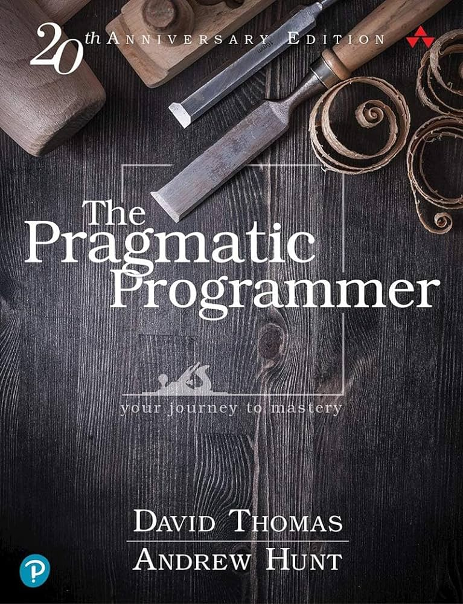
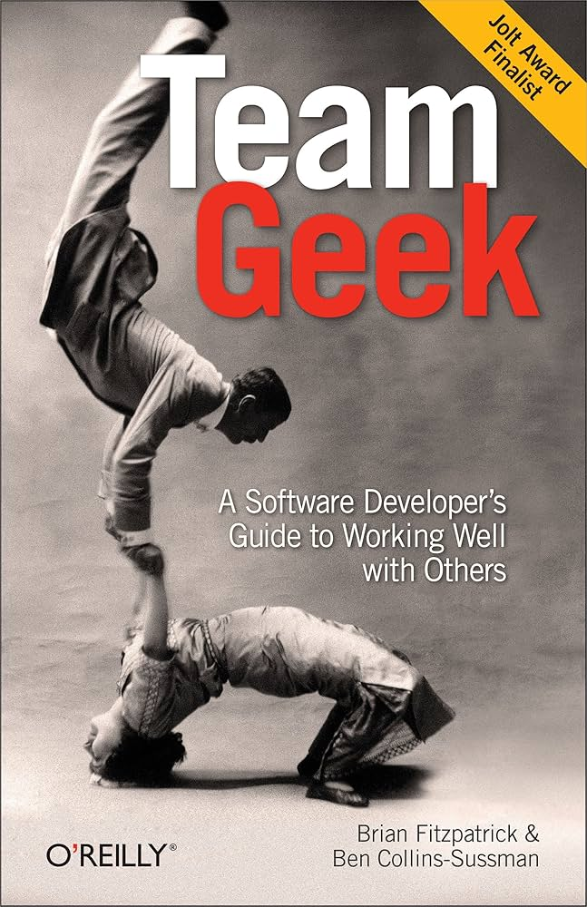

<style>
  .book-ad {
    display: inline-block;
    inline-size: 400px;
  }
  .book-ad__cover-image {
    float: inline-end;
    inline-size: 200px;
  }
  .book-ad__cover-image::after {
    content: "";
    display: block;
    clear: both;
  }
</style>

<section class="book-ad">
  
  <p class="book-ad__description">
    The Pragmatic Programmer: From Journeyman to Master is a book about computer
    programming and software engineering, written by Andrew Hunt and David
    Thomas and published in October 1999. It is used as a textbook in related
    university courses.
  </p>
  <p class="book-ad__description">
    A second edition, The Pragmatic Programmer: Your Journey to Mastery was
    released in 2019 for the book's 20th anniversary, with major revisions and
    new material which reflects new technology and other changes in the software
    engineering industry over the last twenty years.
  </p>
  <button type="button">Buy this book</button>
</section>
<section class="book-ad">
  
  <p class="book-ad__description">
    As a software engineer, you're great with computer languages, compilers,
    debuggers, and algorithms. And in a perfect world, those who produce the
    best code are the most successful. But in our perfectly messy world, success
    also depends on how you work with people to get your job done.
  </p>
  <p class="book-ad__description">
    In this highly entertaining book, Brian Fitzpatrick and Ben Collins-Sussman
    cover basic patterns and anti-patterns for working with other people, teams,
    and users while trying to develop software.
  </p>
  <button type="button">Buy this book</button>
</section>
